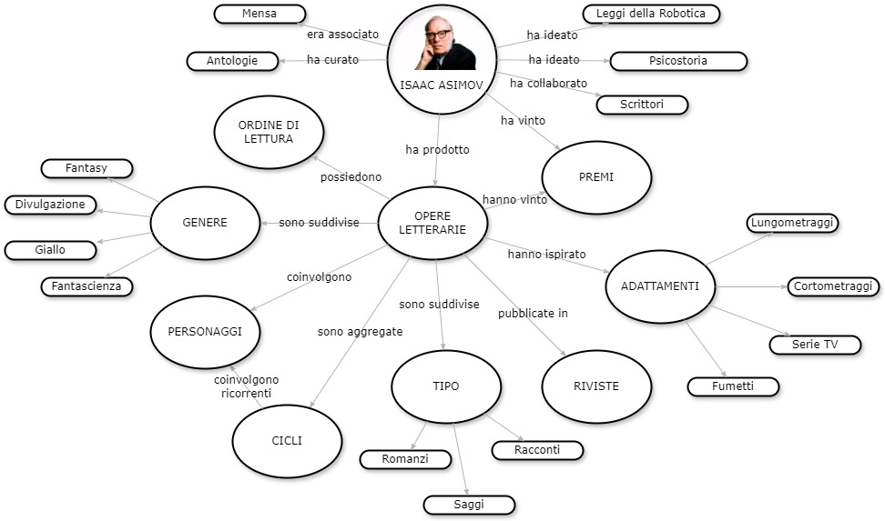
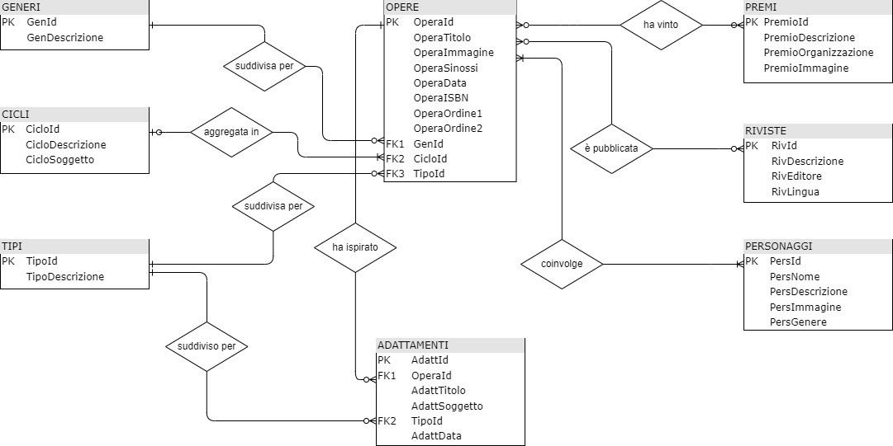
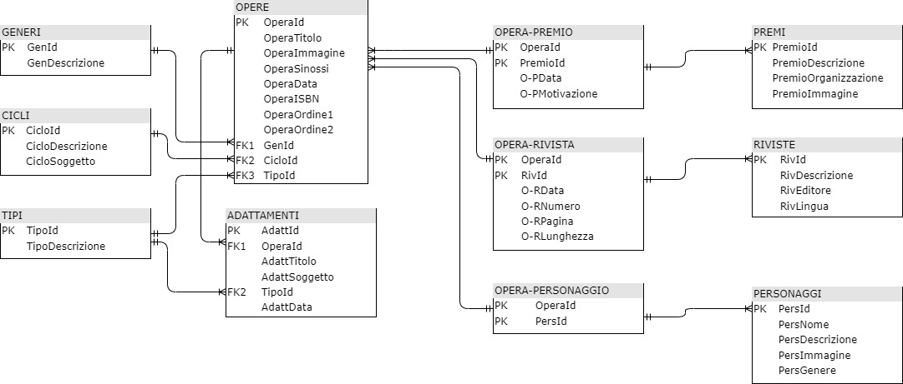
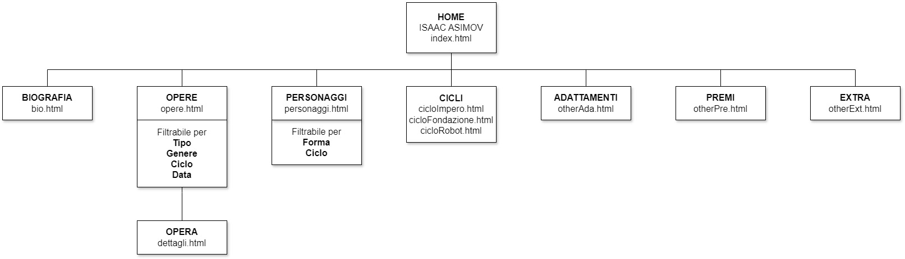

Sommario
1. Abstract
Il progetto sviluppa un sito web dedicato alla figura e alla produzione letteraria di Isaac Asimov, oltre alle opere che ne sono derivate quali film, serie televisive e simili.
Il sito contiene cenni biografici, catalogo delle opere, catalogo dei personaggi, dettagli di opere e personaggi, contenuti extra relativi all’autore;
i cataloghi sono provvisti di funzioni di ricerca e di filtro.
Lo sviluppo del progetto si basa sui linguaggi HTML, CSS e Javascript; il progetto è caricato in un repository GitHub dedicato.
2. Brief
2.1 Finalità
Il progetto ha l’obiettivo di creare un sito web dedicato a Isaac Asimov, uno degli autori di fantascienza
più influenti del XX secolo. Il sito fornisce un’esperienza completa e strutturata sulla sua vita,
la sua produzione letteraria e l’impatto culturale delle sue opere.
Uno degli elementi centrali del progetto è il catalogo delle opere,
che raccoglie romanzi, racconti e saggi scritti da Asimov, organizzati per genere e periodo.
Ogni opera è corredata da una scheda dell'opera con informazioni dettagliate, tra cui trama,
ciclo di appartenenza, ordine di lettura consigliato e collegamenti con altre opere.
Il sito include anche un catalogo dei personaggi, che elenca e descrive le figure più iconiche
dell’universo asimoviano, dai protagonisti dei cicli della Fondazione e dei Robot ai personaggi minori che hanno contribuito
a rendere uniche le sue storie.
Oltre ai cataloghi, il sito presenta una sezione biografica, che ripercorre la vita di Asimov,
il suo percorso accademico e il contributo alla divulgazione scientifica. Sono inclusi anche approfondimenti sui temi
ricorrenti nella sua narrativa, come l’intelligenza artificiale, la psicostoria
e l’etica della scienza.
Un’altra area è dedicata alle opere derivate, come film, serie TV e adattamenti teatrali basati sui suoi scritti.
Questa sezione analizza come il lavoro di Asimov sia stato reinterpretato in altri media.
2.2 Pubblico di riferimento
Il sito è pensato per un pubblico ampio e diversificato, comprendente appassionati di fantascienza, studiosi di letteratura, ricercatori, studenti e curiosi della divulgazione scientifica. I lettori di Asimov troveranno un archivio dettagliato delle sue opere e personaggi, mentre chi si avvicina per la prima volta ai suoi scritti potrà esplorare guide e approfondimenti. Il sito è utile anche a docenti e accademici interessati all’analisi della sua narrativa e del suo impatto culturale. Inoltre, i fan di film e serie ispirati alle sue opere avranno uno spazio per scoprire connessioni e adattamenti.
2.3 Accesso alla risorsa
Il sito è progettato per garantire accessibilità da qualsiasi dispositivo, offrendo un’esperienza ottimale su desktop, tablet e smartphone. La struttura è completamente responsive adattandosi automaticamente a schermi di diverse dimensioni per una navigazione fluida e intuitiva. I contenuti sono presentati in modo chiaro tramite testi ben leggibili, immagini ottimizzate e un’interfaccia interattiva che facilita la consultazione delle opere e dei personaggi di Asimov. La navigazione è progettata per essere semplice ed efficace, con menu intuitivi, funzioni di ricerca e filtri avanzati permettendo agli utenti di trovare rapidamente le informazioni desiderate con pochi clic.
2.4 Modalità di raccolta dei contenuti e dei dati
I contenuti e i dati del sito sono stati raccolti attraverso diverse fonti online e offline, selezionate per garantire accuratezza e completezza delle informazioni. Wikipedia è stata utilizzata per ottenere una panoramica su Isaac Asimov, la sua biografia e le sue opere. Google Search ha permesso di accedere a numerosi siti specializzati, blog e articoli dedicati all’autore e alle sue produzioni. YouTube è stato impiegato per reperire interviste, documentari e approfondimenti video. Le copertine dei libri utilizzate come immagini di riferimento per le opere, sono state reperite su Amazon e su altri siti di vendita libri. Inoltre, dati e approfondimenti sono stati estratti direttamente da libri della mia libreria personale garantendo una base informativa solida e affidabile.
3. Benchmark
Il web propone tante risorse dedicate o inerenti Isaac Asimov. La ricerca effettuata mostra come esse contengano
solo parziali informazioni sul tema e siano sviluppate con tecnologie ormai sorpassate. É sorprendente come non esista
il sito www.isaacaasimov.com
I siti più completi reperiti e presi a riferimento come benchmark sono riportati in calce.
3.1 Sito www.isaacasimov.it
Il sito isaacasimov.it è dedicato alla memoria di Isaac Asimov, offrendo ai visitatori una panoramica sulla sua vita e le sue opere.
3.1.1 Idea
Il sito presenta una home page con un menu laterale molto schematico che indirizza a pagine tutte identiche come layout.
3.1.2 Contenuti
Il sito riporta informazioni molto sintetiche sulla biografia e le opere di Asimov suddivise nelle pagine richiamate dal menu laterale. É presente una pagina denominata Enciclopedia che riporta gli elenchi di personaggi, mondi, astronavi. Nella sezione varie sono riportati contributi eterogenei volti ad approfondire la figura asimoviana.
3.1.3 Design
L'aspetto grafico appare datato e sviluppato a livello amatoriale, con colori in stile anni 1990-2000. Non sono presenti funzioni di ricerca e filtri. Non è ottimizzato per dispositivi mobili. Non sono presenti effetti grafici di richiamo dell'attenzione.
3.1.4 Tecnologia
La tecnologia utilizata è in linea con il datato aspetto grafico e si basa su HTML. Pare improbabile siano stati utilizzati strumenti di sviluppo di ultima generazione.
3.2 Sito www.asimovonline.com
Il sito asimovonline.com è dedicato alla memoria di Isaac Asimov, con l'obiettivo di fornire una raccolta completa di risorse relative all'autore, offrendo agli appassionati e ai ricercatori un punto di riferimento centralizzato per esplorarne la vita e le opere.
3.2.1 Idea
Il sito presenta una home page a testi successivi al cui interno sono presenti link di navigazione alle altre pagine. Non è presente un menu.
3.2.2 Contenuti
Il sito riporta informazioni abbastanza complete sull'autore e sulle opere ma molti dei link puntano a pagine vuote o inesistenti. Interessante il link che punta alla storia dei robot positronici e della fondazione
3.2.3 Design
L'aspetto grafico è minimale, non sfrutta i colori, appare datato e sviluppato a livello amatoriale. Non sono presenti funzioni di ricerca e filtri. Non è ottimizzato per dispositivi mobili. Non sono presenti effetti grafici di richiamo dell'attenzione.
3.2.4 Tecnologia
La tecnologia utilizata è in linea con l'aspetto grafico e si basa su HTML. Pare improbabile siano stati utilizzati strumenti di sviluppo di ultima generazione.
4. Struttura
4.1 Mappa concettuale
4.2 Diagramma E-R

4.3 Modello relazionale

4.4 Schema dipendenze

4.5 Categorie
Le categorie descrittive DC di ogni opera sono le seguenti:
- Title: titolo
- Creator: autore
- Subject: genere (Fantascienza, Giallo, Divulgazione, Fantasy)
- Description: sinossi
- Date: data di prima pubblicazione
- Type: tipo (Romanzo, Racconto, Saggio)
- Format: formato
- Language: lingua
5. Layout
Tutte le pagine sono composte da un header, un corpo e un footer.
L'header della home page contiene un'immagine a tutta larghezza, gli header delle pagine dipendenti contengono la stessa immagine
ridotta in dimensioni sul lato sinistro e sul lato destro l'argomento della pagina.
Al di sotto troviamo in tutte le pagine una barra menu di navigazione che rimane bloccata
al top dello schermo durante lo scroll verticale. Nella stessa barra è incluso anche un campo di ricerca testuale;
tutte le pagine dipendenti presentano sotto la barra menu di navigazione i breadcrumbs
Il footer è lo stesso per tutte le pagine e include disclaimer, FAQs, collegamenti a siti utili, follow bar per i social.
5.1.1 Wireframe homepage
Il corpo della pagina è diviso in quattro sezioni:
- breve presentazione dello scrittore con link alla biografia
- carosello che presenta le leggi della robotica con link alla pagina dedicata
- breve presentazione della produzione letteraria di Asimov con contenitore dei top seller con link alla pagina di dettaglio relativa
- contenitore con video di interviste che riportano il pensiero di Asimov su diversi temi
5.1.2 Wireframe opere
Il corpo della pagina è diviso in tre sezioni:
- slider a due cursori nella parte superiore per la selezione del periodo temporale
- colonna sul lato sinistro con filtri, ordinamenti e casella di ricerca testuale sul titolo
- raccolta delle opere, rappresentate dall'immagine della copertina linkabile
5.1.3 Wireframe dettaglio opere
Il corpo della pagina è diviso in quattro sezioni:
- titolo dell'opera nella parte superiore
- immagine della copertina dell'opera
- campi descrittivi dell'opera
- sinossi dell'opera
5.1.4 Wireframe personaggi
Il corpo della pagina è diviso in tre sezioni:
- colonna sul lato sinistro con filtri e casella di ricerca testuale sul nome; nella versione mobile è presente anche un pulsante che rimanda all'accordion delle iniziali in fondo alla pagina
- raccolta dei personaggi con immagine, attributi e descrizione
- colonna sul lato destro con accordion per iniziale nome
5.1.5 Wireframe ciclo
La stringa XX può assumere i valori Fondazione, Impero, Robot. Il corpo della pagina è diviso in due sezioni:
- titolo del ciclo con immagine associata
- descrizione del ciclo con link alle opere associate
5.1.6 Wireframe other
Questo formato di pagina è utilizzato per tutte le altre pagine del sito (Bio, Premi, Adattamenti, Extra) Il corpo della pagina è diviso in due sezioni:
- titolo del soggetto della pagina con immagine associata
- descrizione del soggetto con eventuali link, elementi embedded e simili

5.1.7 Wireframe Impero Galattico
Il corpo della pagina è diviso in tre sezioni:
- titolo del soggetto
- descrizione dell'impero a sinistra
- image map dell'impero con link a finestre modali dei mondi a destra
6. Usabilità
6.1 Architettura
Tutte le pagine hanno la stessa architettura globale:
- header con immagine simbolo e titolo pagina, tranne che in testata
- navbar sticky sotto la testata
- breadcrumbs sotto la navbar, tranne che in home page
- body per le raccolte con eventuali filtri e ricerche a sinistra e in alto
- body per le pagine di dettaglio e di argomento con titolo e immagine di riferimento a top pagina; sotto a questi testo o testo/immagine
- footer con link tipici da footer.
- navbar
- breadcrumbs
- link inseriti nei testi
- link associati alle immagini
- selettori di pagina nelle raccolte
- pulsanti
6.2 Aspetto
La ricerca della massima leggibilità ha portato alle seguenti scelte:
- carattere Lato sans-serif, lineare e sicuro
- numero di colori ridotto al minimo per evitare interferenze con il mix di colori derivante dalle immagini presenti nel sito
- colori ad alto contrasto
6.3 Colori
I colori utilizzati hanno obiettivo di:
- leggibilità
- alto contrasto
- minima interferenza con gli altri elementi della pagina
- immediata identificazione della funzione dell'oggetto
- bianco come colore standard degli sfondi
- nero come colore standard del testo
- azzurro come colore standard per gli elementi cliccabili e di selezione; vuole richiamare il colore del cielo verso cui tendono molte opere dell'autore
La pagina attiva nella navbar è a colori invertiti.
I link sono evidenziati in hover con sottolineatura e mantenimento del colore.
Tooltip e overlay sono a sfondo nero con trasparenza e testo azzurro.
Il pulsante di Torna su è a elevata trasparenza.
Non sono state utilizzate icone per link ma direttamente testi e immagini relativi all'argomento.
7. Servizi
7.1 Browsing
Il browsing è possibile tramite:
- caselle combinate che filtrano le raccolte in base a molteplici campi
- caselle combinate che ordinano le raccolte in base a molteplici campi
- accordion basato sulle iniziali dei personaggi
- caselle di ricerca testuale che ricercano nel campo principale della raccolta (Titolo, Nome)
- slider a due indici per filtrare le date
- pulsante modale per tornare a inizio pagina
7.2 Interazione
L'interazione è possibile tramite:
- navbar che include anche dropdown menu
- carousel in home page
- card nelle raccolte
- modali per l'ingrandimento delle immagini dei personaggi
- modali per la visualizzazione dei mondi sulla image map dell'Impero Galattico
- tooltips sulla image map dell'Impero Galattico
- pagination nelle raccolte
7.3 Tools
I tools utilizzati per migliorare le funzionalità del sito sono:
- sharethis per integrazione dei servizi social
- noUIslider per l'integrazione degli slider
- caricamento dei file .csv di Opere e Personaggi
- caricamento dei file .txt di Sinossi e Descrizioni dei Personaggi
- paginazione delle raccolte
- aggiornamento delle raccolte in base a filtri locali e a filtri in entrata
- apertura delle pagine modali
- visualizzazione dei tooltips
- arbor.js per creare un grafo di connessione dei personaggi basandosi su un DB esterno
- chatGPT per creare le immagini dei personaggi e dei mondi di fantasia sulla base della loro descrizione nelle opere
8. Fonti e Strumenti
8.1 Bibliografia
- Opere di Asimov della biblioteca personale
- Wikipedia per informazioni e brevi testi
- W3Schools per aiuto alla programmazione HTML, CSS e Javascript
- HTML.it per aiuto alla programmazione HTML, CSS e Javascript
- Getbootstrap per aiuto all'utilizzo del framework Bootstrap
- Google Images per le immagini utilizzate
8.2 Strumenti
- Bootstrap come framework di sviluppo
- ChatGPT per la stesura delle sinossi delle opere
- Drawio per la redazione di mappe concettuali e diagrammi
- Balsamiq per la redazione dei wireframe
- Photoshop per la modifica delle immagini